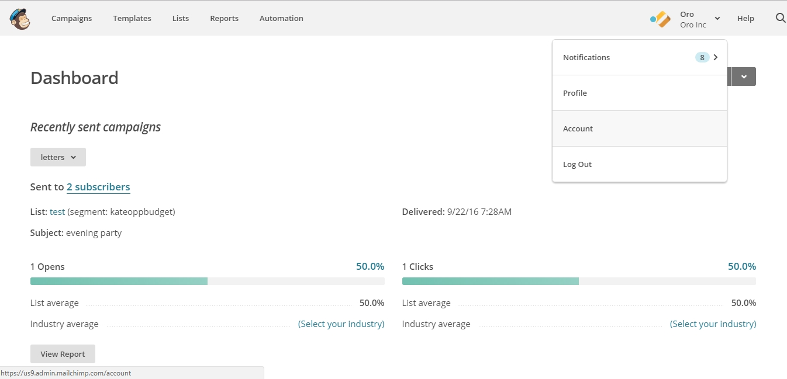
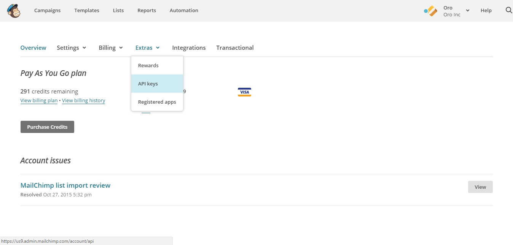
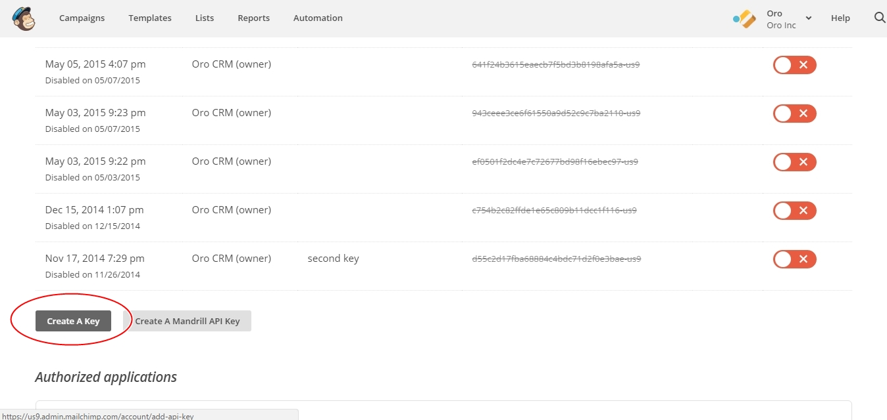
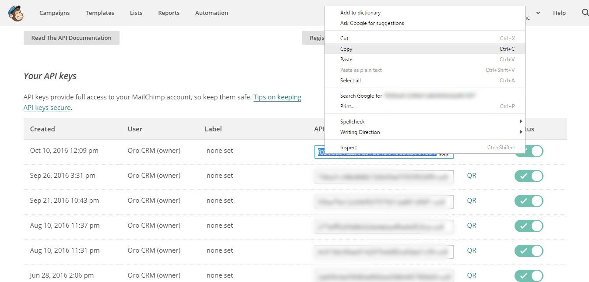
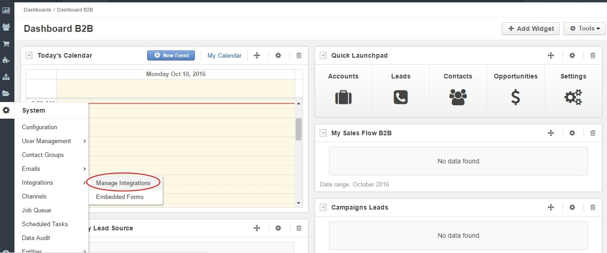
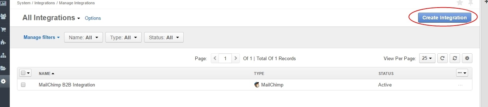

To configure MailChimp integration, ensure that you have MailChimp extension installed in your Oro instance. For installation instructions, click here.
SaaS users should have MailChimp preinstalled.
To configure integration with Oro application on the MailChimp side, you need to create an API key. To do that:
Login to MailChimp.
Navigate to your name in the upper right corner.
Select Account.
Go to Extras.
Click API keys.
Scroll down to the bottom of the page and press Create a Key.
A newly created key will appear at the top of the list. Copy the key.
Log into Oro application and navigate to System > Integrations > Manage Integrations.
Click Create Integration in the top right corner.
Next, complete the following fields:
| Field | Description |
|---|---|
| Type | Among other third-party services, choose MailChimp as this is the integration we are configuring. A form specific to MailChimp will be displayed. |
| Name | Specify the integration Name as it will be referred to within Oro application. |
| API Key | Paste the API key you copied in your MailChimp account. Click Check Connection. Everything’s Chimpy means that the connection was successful and you are now authorized. |
| Activity Update Interval | Now set the Activity Update Interval to a period you plan to run your campaign for. This should be set based on the length of your campaign and data storage requirements specific to your Oro instance. |
| Status | Active or Inactive. By default, Status is set to Active. |
| Owner | The Owner determines the list of users who can manage the integration and the data synchronized with it. This means that the owner receives the data produced by the email campaign. All Entities imported within the integration will be assigned to the selected user. It is suggested to select a marketing rep as the owner. |
| Enable Two Way Sync | Use this section to enable or disable two-way synchronization. By default, Enable Two Way Sync is unchecked. If it remains unchecked, unsubscribes will pass from MailChimp to Oro application. If enabled, subscription status can be passed from Oro application to MailCHimp and the other way around. |
| Sync Priority: | Remote Wins means that the MailChimp will be considered the master and override conflicts with the Oro application. Local Wins means that local data will be the master and override any conflicts with MailChimp. |
4. Once all the details of the integration have been specified, click Save and Close. The integration has been successfully configured and will now appear in the integration grid.
In order to sync your integration: